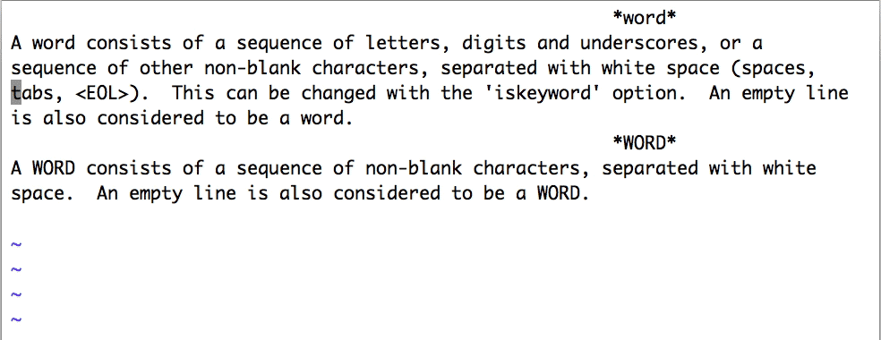

- 00 导读 池建强：Vim 就是四个字“唯快不破”.md.html
- 00 开篇词 我们为什么要学 Vim？.md.html
- 01 各平台下的 Vim 安装方法：上路前准备好你的宝马.md.html
- 02 基本概念和基础命令：应对简单的编辑任务.md.html
- 03 更多常用命令：应对稍复杂的编辑任务.md.html
- 04 初步定制：让你的 Vim 更顺手.md.html
- 05 多文件打开与缓冲区：复制粘贴的正确姿势.md.html
- 06 窗口和标签页：修改、对比多个文件的正确姿势.md.html
- 07 正则表达式：实现文件内容的搜索和替换.md.html
- 08 基本编程支持：规避、解决编程时的常见问题.md.html
- 09 七大常用技巧：让编辑效率再上一个台阶.md.html
- 10 代码重构实验：在实战中提高编辑熟练度.md.html
- 11 文本的细节：关于字符、编码、行你所需要知道的一切.md.html
- 12 语法加亮和配色方案：颜即正义.md.html
- 13 YouCompleteMe：Vim 里的自动完成.md.html
- 14 Vim 脚本简介：开始你的深度定制.md.html
- 15 插件荟萃：不可或缺的插件.md.html
- 16 终端和 GDB 支持：不离开 Vim 完成开发任务.md.html
- 拓展1 纯文本编辑：使用 Vim 书写中英文文档.md.html
- 拓展2 C 程序员的 Vim 工作环境：C 代码的搜索、提示和自动完成.md.html
- 拓展3 Python 程序员的 Vim 工作环境：完整的 Python 开发环境.md.html
- 拓展4 插件样例分析：自己动手改进插件.md.html
- 拓展5 其他插件和技巧：吴咏炜的箱底私藏.md.html
- 结束语 Vim 森林探秘，一切才刚刚开始.md.html
- 捐赠
03 更多常用命令：应对稍复杂的编辑任务
你好，我是吴咏炜。
上一讲我们通过 Vim 教程学习了 Vim 的基本命令，我还给你讲解了 Vim 的基本配置，现在你就已经可以上手基本的编辑工作了。
今天，我们将学习更多 Vim 的常用命令，以便更高效地进行编辑。我会先带你过一下光标移动命令和文本修改命令，然后重点讲解文本对象，随后快速讨论一下不能搭配文本修改的光标移动命令，最后讨论如何重复命令。
光标移动
我们先来讨论一下可以跟文本修改、复制搭配的光标移动命令。
通过前面的课程，你已经知道，Vim 里的基本光标移动是通过 h、j、k、l 四个键实现的。之所以使用这四个键，是有历史原因的。你看一下 Bill Joy 开发 vi 时使用的键盘就明白了：这个键盘上没有独立的光标键，而四个光标符号直接标注在 H、J、K、L 四个字母按键上。
当然，除了历史原因外，这四个键一直使用至今，还是有其合理性的。它们都处于打字机的本位排（home row）上，这样打字的时候，手指基本不用移动就可以敲击到。因此，即使到了键盘上全都有了光标移动键的今天，很多 Vim 的用户仍然会使用这四个键来移动光标。
不过，标准的光标移动键可以在任何模式下使用，而这四个键并不能在插入模式下使用，因此，它们并不构成完全的替代关系。
顺便提一句，你有没有注意到 ADM-3A 键盘上的 Esc 键在今天 Tab 的位置？在 Bill Joy 决定使用 Esc 来退出插入模式的时候，Esc 在键盘上的位置还没像今天那样跑到遥远的左上角去……
Vim 跳转到行首的命令是 0，跳转到行尾的命令是 $，这两个命令似乎没什么特别的原因，一般用 <Home> 和 <End> 也没什么不方便的，虽然技术上它们有一点点小区别。如果你感兴趣、想进一步了解的话，可以参考帮助 :help <Home>。此外，我们也有 ^，用来跳转到行首的第一个非空白字符。
对于一次移动超过一个字符的情况，Vim 支持使用 b/w 和 B/W，来进行以单词为单位的跳转。它们的意思分别是 words Backward 和 Words forward，用来向后或向前跳转一个单词。小写和大写命令的区别在于，小写的跟编程语言里的标识符的规则相似，认为一个单词是由字母、数字、下划线组成的（不严格的说法），而大写的命令则认为非空格字符都是单词。

根据单个字符来进行选择也很常见。比如，现在光标在 if (frame->fr_child != NULL) 第五个字符上，如果我们想要修改括号里的所有内容，需要仔细考虑 w 的选词规则，然后输入 c5w 吗？这样显然不够方便。
这种情况下，我们就需要使用 f（find）和 t（till）了。它们的作用都是找到下一个（如果在输入它们之前先输入数字 n 的话，那就是下面第 n 个）紧接着输入的字符。两者的区别是，f 会包含这个字符，而 t 不会包含这个字符。在上面的情况下，我们用 t 就可以了：ct) 就可以达到目的。如果需要反方向搜索的话，使用大写的 F 和 T 就可以。
对于写文字的情况，比如给开源项目写英文的 README，下面的光标移动键也会比较有用：
(和)移到上一句和下一句{和}移到上一段和下一段

在很多环境（特别是图形界面）里，Vim 支持使用 <C-Home> 和 <C-End> 跳转到文件的开头和结尾。如果遇到困难，则可以使用 vi 兼容的 gg 和 G 跳转到开头和结尾行（小区别：G 是跳转到最后一行的第一个字符，而不是最后一个字符）。
光标移动咱们就讲到这里。你需要重点掌握的就是 Vim 里除了简单的光标移动，还有“小词”、“大词”、句、段的移动，以及字符的搜索；每种方式都分向前和向后两种情况。
文本修改
接着，我们来看文本修改。
在 Vim 的教程里，我们已经学到，c 和 d 配合方向键，可以对文本进行更改。本质上，我们可以认为 c（修改）的功能就是执行 d（删除）然后 i（插入）。在 Vim 里，一般的原则就是，常用的功能，按键应尽可能少。因此很多相近的功能在 Vim 里会有不同的按键。不仅如此，大写键也一般会重载一个相近但稍稍不同的含义：
d加动作来进行删除（dd删除整行）；D则相当于d$，删除到行尾。c加动作来进行修改（cc修改整行）；C则相当于c$，删除到行尾然后进入插入模式。s相当于cl，删除一个字符然后进入插入模式；S相当于cc，替换整行的内容。i在当前字符前面进入插入模式；I则相当于^i，把光标移到行首非空白字符上然后进入插入模式。a在当前字符后面进入插入模式；A相当于$a，把光标移到行尾然后进入插入模式。o在当前行下方插入一个新行，然后在这行进入插入模式；O在当前行上方插入一个新行，然后在这行进入插入模式。r替换光标下的字符；R则进入替换模式，每次按键（直到<Esc>）替换一个字符。u撤销最近的一个修改动作；U撤销当前行上的所有修改。
熟练掌握这些按键需要一定的记忆和练习。但是，当你熟练掌握之后，大部分编辑操作只需要按一两个按键就能完成；而在你还没有做到熟练掌握之前，记住最简单、最有逻辑的按键也可以让你至少能够完成需要的编辑任务。
文本对象选择
好，接下来就是我们今天的重点内容，文本对象的选择了。我之所以把这部分内容作为这节课的重点，是因为这是一个很方便很强大的功能，并且特别适合程序中的逻辑块的编辑。
到现在，我们已经学习过，可以使用 c、d 加动作键对这个动作选定的文本块进行操作，也可以使用 v 加动作键来选定文本块（以便后续进行操作），我们也学习了好些移动光标的动作。不过，还有几个动作只能在 c、d、v、y 这样命令之后用，我们也需要学习一下。
这些选择动作的基本附加键是 a 和 i。其中，a 可以简单理解为英文单词 a，表示选定后续动作要求的完整内容，而 i 可理解为英文单词 inner，代表后续动作要求的内容的“内部”。这么说，还是有点抽象，我们来看一下具体的例子。
假设有下面的文本内容：
if (message == "sesame open")
我们进一步假设光标停在“sesame”的“a”上，那么（和一般的行文惯例不同，下面在命令外面也加上了引号，避免可能的歧义）：
- ‘
dw’（理解为 delete word）会删除“ame␣”，结果是“if (message == "sesopen")” - ‘
diw’（理解为 delete inside word）会删除“sesame”，结果是“if (message == " open")” - ‘
daw’（理解为 delete a word）会删除“sesame␣”，结果是“if (message == "open")” - ‘
diW’会删除“"sesame”，结果是“if (message == open")” - ‘
daW’会删除“"sesame␣”，结果是“if (message == open")” - ‘
di"’会删除“sesame open”，结果是“if (message == "")” - ‘
da"’会删除“"sesame open"”，结果是“if (message ==)” - ‘
di(’或‘di)’会删除“message == "sesame open"”，结果是“if ()” - ‘
da(’或‘da)’会删除“(message == "sesame open")”，结果是“if␣”
上面演示了 a、i 和 w、双引号、圆括号搭配使用，这些对于任何语言的代码编辑都是非常有用的。实际上，可以搭配的还有更多：
- 搭配
s（sentence）对句子进行操作——适合西文文本编辑 - 搭配
p（paragraph)对段落进行操作——适合西文文本编辑，及带空行的代码编辑 - 搭配
t（tag）对 HTML/XML 标签进行操作——适合 HTML、XML 等语言的代码编辑 - 搭配
`和'对这两种引号里的内容进行操作——适合使用这些引号的代码，如 shell 和 Python - 搭配方括号（“[”和“]”）对方括号里的内容进行操作——适合各种语言（大部分都会用到方括号吧）
- 搭配花括号（“{”和“}”）对花括号里的内容进行操作——适合类 C 的语言
- 搭配角括号（“<”和“>”）对角括号里的内容进行操作——适合 C++ 的模板代码
再进一步，在 a 和 i 前可以加上数字，对多个（层）文本对象进行操作。下面图中是一个示例：

你看，无论你使用什么语言，这些快捷的文本对象选择方式是不是总会有一种可以适用？我个人觉得这些功能绝对是 Vim 的强项了，所以，我再敲一次黑板，这部分内容是重点，不要嫌内容多，挨个儿用一用、练一练，你会发现这个功能非常实用，在写代码的时候常常会用得上。
更快地移动
除了这讲开头提到的光标移动功能外，还有一些通常不和操作搭配的光标和屏幕移动功能。我们在这节里会快速描述一下。
我们仍然可以使用 <PageUp> 和 <PageDown> 来翻页，但 Vim 更传统的用法是 <C-B> 和 <C-F>，分别代表 Backward 和 Forward。
除了翻页，Vim 里还能翻半页，有时也许这种方式更方便，需要的键是 <C-U> 和 <C-D>，Up 和 Down。
如果你知道出错位置的行号，那你可以用数字加 G 来跳转到指定行。类似地，你可以用数字加 | 来跳转到指定列。这在调试代码的时候非常有用，尤其适合进行自动化。
下图中展示了 iTerm2 中捕获输出并执行 Vim 命令的过程（用 vim -c 'normal 5G36|' 来执行跳转到出错位置第 5 行第 36 列）：

（如果你用 iTerm2 并对这个功能感兴趣，我设置的正则表达式是 ^([_a-zA-Z0-9+/.-]+):([0-9]+):([0-9]+): (?:fatal error|error|warning|note):，捕获输出后执行的命令是 echo "vim -c 'normal \2G\3|' \1"。）
你只关心当前屏幕的话，可以快速移动光标到屏幕的顶部、中间和底部：用 H（High）、M（Middle）和 L（Low）就可以做到。
顺便提一句，vimrc_example 有一个设定，我不太喜欢：它会设 set scrolloff=5，导致只要屏幕能滚动，光标就移不到最上面的 4 行和最下面的 4 行里，因为一移进去屏幕就会自动滚动。这同样也会导致 H 和 L 的功能发生变化：本来是移动光标到屏幕的最上面和最下面，现在则变成了移动到上数第 6 行和下数第 6 行，和没有这个设定时的 6H 与 6L 一样了。所以我一般会在 Vim 配置文件里设置 set scrolloff=1（你也可以考虑设成 0），减少这个设置的干扰。
只要光标还在屏幕上，你也可以滚动屏幕而不移动光标（不像某些其他编辑器，Vim 不允许光标在当前屏幕以外）。需要的按键是 <C-E> 和 <C-Y>。
另外一种可能更实用的滚动屏幕方式是，把当前行“滚动”到屏幕的顶部、中部或底部。Vim 里的对应按键是 zt、zz 和 zb。和上面的几个滚动相关的按键一样，它们同样受选项 scrolloff 的影响。

重复，重复，再重复
今天的最后，我来带你解决一个你肯定会遇到的问题，那就是如何更高效地解决重复的操作。
我们已经看到，在 Vim 里有非常多的命令，而且很多命令都需要敲好几个键。如果你要重复这样的命令，每次都要再手敲一遍，这显然是件很费力的事。作为追求高效率的编辑器，这当然是不可接受的。除了我们以后要学到的命令录制、键映射、自定义脚本等复杂操作外，Vim 对很多简单操作已经定义了重复键：
;重复最近的字符查找（f、t等）操作,重复最近的字符查找操作，反方向n重复最近的字符串查找操作（/和?）N重复最近的字符串查找操作（/和?），反方向.重复执行最近的修改操作
有了这些，重复操作就非常简单了。要掌握它们的方法就是多练习，多用几次自然就会了。
内容小结
好了，今天的内容就讲完了，我们来做个小结。我们讨论了更多的一些常用 Vim 命令，包括：
- 基本光标移动命令（可配合
c、d和v） - 文本修改命令小汇总
- 文本对象命令（
c、d、v后的a和i） - 更快的光标和屏幕移动功能
- 重复功能
今天讲的内容不难，重点是文本对象。你知道吗？我见到的 Vim 命令速查表里通常也没有它们，因而连很多 Vim 的老用户都不知道这些功能呢。所以，掌握了这部分内容，我们就已经走在很多 Vim 用户的前面了。请一定要多加练习，用好这个功能会大大提升你的代码编辑效率。
最后，提醒你去 GitHub 上看配置文件。配置文件我们有一处改动。类似地，适用于本讲的内容标签是 l3-unix 和 l3-windows。
课后练习
请把本讲里面描述的 Vim 功能自己练习一下，尤其需要重点掌握的是文本修改命令、文本对象命令和重复功能。其他某些功能可能只对部分人和某些场景有用，如果一个功能你觉得用不上，不用去强记。毕竟，不用的功能，即使一时死记硬背可以记住，也很快会遗忘的。
欢迎你在留言区分享自己的学习收获和心得，有问题也要及时反馈，我们一起交流讨论。我们下一讲见！
© 2019 - 2023 Liangliang Lee. Powered by gin and hexo-theme-book.